CODING AGENTS AS PIXEL WORLD MODELS
traex/GPT-6.1-Sol · common50_0043
点击播放 · 原生 RGB 像素
逐轮保存的候选
回放视频、检查图与代码变化。
每份候选均可单独播放。实际图片检查记录在下方工具轨迹中。
候选 01播放与检查图
点击播放 · 原生 RGB 像素
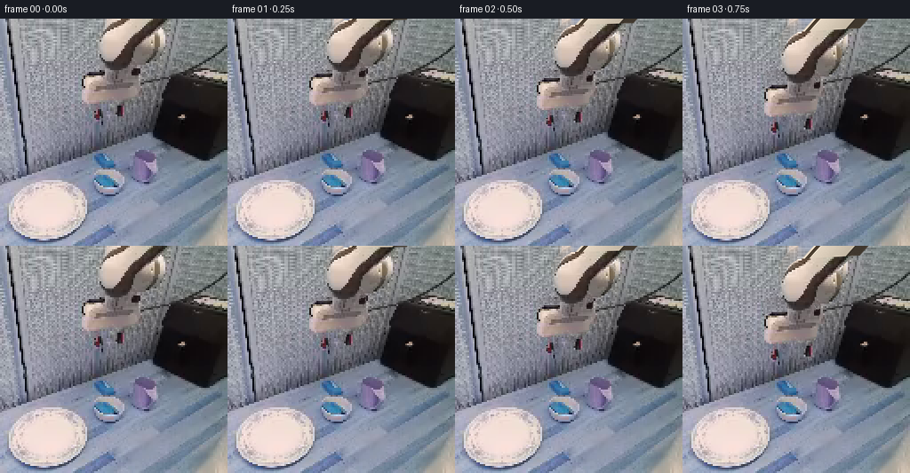
展开代码变化
--- 上一保存版本
+++ 本次保存版本
@@ -0,0 +1,161 @@
+from pathlib import Path
+import numpy as np
+from PIL import Image, ImageDraw, ImageFilter
+import artifact_io
+
+ROOT = Path(__file__).resolve().parent
+N = 256
+im = Image.open(ROOT/'first_frame.png').convert('RGB')
+orig = np.asarray(im).copy()
+
+def mask_poly(points, feather=.32):
+ m=Image.new('L',(N,N));d=ImageDraw.Draw(m);d.polygon(points,fill=255)
+ return m.filter(ImageFilter.GaussianBlur(feather)) if feather else m
+
+def union(*ms):
+ return Image.fromarray(np.max(np.stack([np.array(m) for m in ms]),axis=0).astype('uint8'))
+
+arm_mask=union(mask_poly([(136,-3),(193,-3),(178,14),(163,28),(149,46),(137,58),(128,61),(120,56),(114,48),(110,37),(111,25),(115,14),(123,5)]),mask_poly([(143,19),(159,13),(170,11),(176,15),(179,24),(178,34),(173,44),(165,51),(153,53),(141,48)]))
+palm_mask=mask_poly([(117,47),(141,46),(147,50),(149,57),(154,56),(153,70),(151,79),(149,90),(145,93),(128,95),(97,95),(91,93),(90,76),(90,66),(94,61),(105,58),(118,60)])
+left_mask=mask_poly([(108,94),(114,94),(114,113),(116,115),(116,120),(113,120),(111,115),(107,115),(104,112),(105,105),(108,104)])
+right_mask=mask_poly([(133,92),(140,92),(141,110),(138,111),(138,114),(135,114),(134,111),(130,110),(130,101),(133,100)])
+robot_mask=union(arm_mask,palm_mask,left_mask,right_mask)
+bowl_mask=mask_poly([(111,172),(117,170),(127,170),(134,173),(139,177),(141,182),(140,189),(136,194),(130,198),(117,198),(111,195),(107,190),(104,184),(104,178),(107,175)],.45)
+
+def inpaint(image, mask, kind):
+ # Harmonic low-frequency completion, supplemented by wall/table texture
+ # sampled exclusively from intact pixels of the same photograph.
+ a=np.asarray(image,dtype=np.float64)
+ m=np.array(mask)/255.
+ hole=m>.04
+ Y,X=np.indices((N,N))
+ if kind=='wall':
+ sx=43+(X-43)%43
+ sy=Y
+ else:
+ sx=X+39
+ sy=Y-8
+ sx=np.clip(sx,0,255);sy=np.clip(sy,0,255)
+ donor=a[sy,sx]
+ base=np.asarray(image.filter(ImageFilter.GaussianBlur(3)),dtype=float)
+ low=base.copy();low[hole]=donor[hole]
+ for _ in range(700):
+ av=(np.roll(low,1,0)+np.roll(low,-1,0)+np.roll(low,1,1)+np.roll(low,-1,1))*.25
+ low[hole]=av[hole]
+ donor_blur=np.asarray(Image.fromarray(np.uint8(donor)).filter(ImageFilter.GaussianBlur(2)),float)
+ fill=low+(donor-donor_blur)*.8
+ blend=np.asarray(mask.filter(ImageFilter.MaxFilter(3)).filter(ImageFilter.GaussianBlur(.6)),float)/255
+ return Image.fromarray(np.uint8(np.clip(a*(1-blend[...,None])+fill*blend[...,None],0,255)))
+
+bg=inpaint(im,robot_mask,'wall')
+# The black cable stays fixed to the rear wall; its hidden continuation is
+# reconstructed as a short line through the newly exposed background.
+cable=Image.new('RGBA',(N*3,N*3));cd=ImageDraw.Draw(cable)
+cd.line([(86*3,77*3),(113*3,79*3),(137*3,78*3),(154*3,75*3),(165*3,73*3)], fill=(38,42,40,185),width=5)
+cable=cable.resize((N,N),Image.Resampling.LANCZOS)
+ca=np.array(cable);ca[:,:,3]=(ca[:,:,3].astype(float)*np.asarray(robot_mask)/255).astype('uint8')
+bg=Image.alpha_composite(bg.convert('RGBA'),Image.fromarray(ca)).convert('RGB')
+bg_lift=inpaint(bg,bowl_mask,'table')
+
+# Build rigid cutout layers. No per-frame morphing is used.
+def cut(mask):
+ layer=im.convert('RGBA');layer.putalpha(mask);return layer
+palm=cut(palm_mask);left=cut(left_mask);right=cut(right_mask);bowl=cut(bowl_mask)
+
+def translate(layer,dx,dy):
+ return layer.transform((N,N),Image.Transform.AFFINE,(1,0,-dx,0,1,-dy),Image.Resampling.BICUBIC)
+
+W0=np.array([135.,33.]);E0=np.array([244.,-76.]);A=np.array([332.,-6.])
+L1=np.linalg.norm(E0-A);L2=np.linalg.norm(W0-E0)
+O=np.array([-100.,-210.]);S=(450,480)
+yy,xx=np.indices((S[1],S[0]));coords=np.stack([xx+O[0],yy+O[1]],-1)
+u=(E0-W0)/L2;norm=np.array([u[1],-u[0]])
+# norm faces down/left in image coordinates.
+t=(coords-W0)@u;v=(coords-W0)@norm
+near=np.clip(t,0,L2)
+dist=np.sqrt((t-near)**2+v*v)
+rng=np.random.default_rng(5)
+noise=rng.normal(0,.7,dist.shape)
+alpha=np.clip((23.5-dist)*255,0,255)
+col=np.zeros((*dist.shape,3));col[:]=[65,57,47]
+# Cream shell, recessed trim and a softly shaded back surface.
+d2=np.sqrt((t-np.clip(t,0,L2))**2+(v-6)**2)
+shell=d2<18
+shade=np.clip((v+12)/31,0,1)
+cream=np.stack([196+36*shade,184+33*shade,165+33*shade],axis=-1)
+col[shell]=cream[shell]
+stripe=(v>17)&(v<21)&(t>21)&(t<L2-14)
+col[stripe]=[78,65,50]
+col+=noise[:,:,None]
+# Only previously out-of-view pixels are synthesized; all visible material
+# comes from the source image and rotates as one rigid part.
+alpha[coords[:,:,1]>=0]=0
+extended=Image.fromarray(np.dstack([np.uint8(np.clip(col,0,255)),np.uint8(alpha)]),'RGBA')
+extended.alpha_composite(cut(arm_mask),dest=(100,210))
+
+def ik(w):
+ vec=w-A;d=np.linalg.norm(vec);direction=vec/d
+ aa=(L1*L1-L2*L2+d*d)/(2*d)
+ hh=np.sqrt(max(0,L1*L1-aa*aa))
+ return A+aa*direction-hh*np.array([direction[1],-direction[0]])
+
+def forearm(w):
+ e=ik(w);a0=np.arctan2(u[1],u[0]);a=np.arctan2((e-w)[1],(e-w)[0])-a0
+ c,s=np.cos(a),np.sin(a)
+ R=np.array([[c,-s],[s,c]])
+ inv=R.T
+ b=W0-inv@w-O
+ coeff=(inv[0,0],inv[0,1],b[0],inv[1,0],inv[1,1],b[1])
+ return extended.transform((N,N),Image.Transform.AFFINE,coeff,Image.Resampling.BICUBIC),e
+
+def upper_link(e):
+ # Rigid proximal link remains mostly outside the fixed camera.
+ scale=3;la=Image.new('RGBA',(N*scale,N*scale));d=ImageDraw.Draw(la)
+ def capsule(p,q,width,color):
+ p=tuple(p*scale);q=tuple(q*scale);r=width*scale/2
+ d.line([p,q],fill=color,width=int(width*scale))
+ for z in [p,q]:d.ellipse((z[0]-r,z[1]-r,z[0]+r,z[1]+r),fill=color)
+ capsule(e,A,39,(78,72,62,255));capsule(e+np.array([0.,-4]),A+np.array([0.,-4]),31,(198,189,171,255))
+ r=21*scale;cx,cy=e*scale
+ d.ellipse((cx-r,cy-r,cx+r,cy+r),fill=(205,197,178,255))
+ r=12*scale;d.ellipse((cx-r,cy-r,cx+r,cy+r),fill=(134,130,119,255))
+ return la.resize((N,N),Image.Resampling.LANCZOS)
+
+def smooth(t):
+ t=np.clip(t,0,1);return t*t*(3-2*t)
+
+frames=[orig]
+for i in range(1,20):
+ reach=smooth(i/11)
+ jaw=10*smooth(i/5)-4*smooth((i-11)/3)
+ lift=20*smooth((i-14)/4)
+ # End effector orientation remains constant while the elbow articulates.
+ offset=np.array([0.,80*reach-lift]);w=W0+offset
+ if lift>0:
+ frame=bg_lift.convert('RGBA')
+ # Original soft tabletop shadow stays on the support surface.
+ sh=Image.new('RGBA',(N,N));ds=ImageDraw.Draw(sh)
+ ds.ellipse((109,193,138,200),fill=(25,42,56,int(40*(1-lift/30))))
+ sh=sh.filter(ImageFilter.GaussianBlur(2))
+ frame=Image.alpha_composite(frame,sh)
+ frame=Image.alpha_composite(frame,translate(bowl,0,-lift))
+ else:frame=bg.convert('RGBA')
+ # Mild, diffuse moving tool shadow cast on the bench.
+ sh=Image.new('RGBA',(N,N));ds=ImageDraw.Draw(sh)
+ strength=17*reach
+ ds.ellipse((103,189,157,207),fill=(18,35,50,int(strength)))
+ sh=sh.filter(ImageFilter.GaussianBlur(7))
+ # Keep objects' appearance intact: shadow only falls on the work surface.
+ sa=np.array(sh);sa[:,:,3]=np.uint8(sa[:,:,3]*(1-np.array(bowl_mask)/255))
+ frame=Image.alpha_composite(frame,Image.fromarray(sa))
+ fa,e=forearm(w)
+ frame=Image.alpha_composite(frame,upper_link(e))
+ frame=Image.alpha_composite(frame,fa)
+ frame=Image.alpha_composite(frame,translate(palm,*offset))
+ frame=Image.alpha_composite(frame,translate(left,offset[0]-jaw,offset[1]))
+ frame=Image.alpha_composite(frame,translate(right,offset[0]+jaw,offset[1]))
+ frames.append(np.asarray(frame.convert('RGB')))
+frames=np.stack(frames).astype(np.uint8)
+artifact_io.save(frames,ROOT)
+bg.save(ROOT/'.tmp/background.png')
+assert np.array_equal(frames[0],orig)
候选 02播放与检查图
点击播放 · 原生 RGB 像素
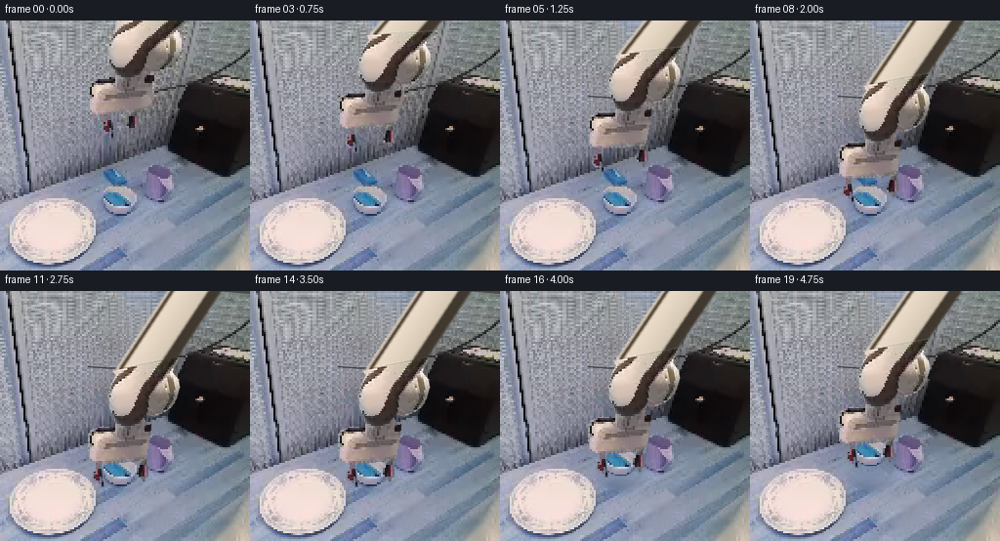
展开代码变化
--- 上一保存版本
+++ 本次保存版本
@@ -15,7 +15,7 @@
def union(*ms):
return Image.fromarray(np.max(np.stack([np.array(m) for m in ms]),axis=0).astype('uint8'))
-arm_mask=union(mask_poly([(136,-3),(193,-3),(178,14),(163,28),(149,46),(137,58),(128,61),(120,56),(114,48),(110,37),(111,25),(115,14),(123,5)]),mask_poly([(143,19),(159,13),(170,11),(176,15),(179,24),(178,34),(173,44),(165,51),(153,53),(141,48)]))
+arm_mask=union(mask_poly([(120,-3),(193,-3),(178,14),(163,28),(149,46),(137,58),(128,61),(120,56),(114,48),(110,37),(111,25),(115,14),(123,5)]),mask_poly([(144,20),(159,13),(173,9),(180,13),(184,22),(184,30),(179,40),(173,47),(165,51),(153,54),(141,48)]))
palm_mask=mask_poly([(117,47),(141,46),(147,50),(149,57),(154,56),(153,70),(151,79),(149,90),(145,93),(128,95),(97,95),(91,93),(90,76),(90,66),(94,61),(105,58),(118,60)])
left_mask=mask_poly([(108,94),(114,94),(114,113),(116,115),(116,120),(113,120),(111,115),(107,115),(104,112),(105,105),(108,104)])
right_mask=mask_poly([(133,92),(140,92),(141,110),(138,111),(138,114),(135,114),(134,111),(130,110),(130,101),(133,100)])
@@ -33,8 +33,8 @@
sx=43+(X-43)%43
sy=Y
else:
- sx=X+39
- sy=Y-8
+ sx=X+38
+ sy=Y+23
sx=np.clip(sx,0,255);sy=np.clip(sy,0,255)
donor=a[sy,sx]
base=np.asarray(image.filter(ImageFilter.GaussianBlur(3)),dtype=float)
@@ -47,7 +47,7 @@
blend=np.asarray(mask.filter(ImageFilter.MaxFilter(3)).filter(ImageFilter.GaussianBlur(.6)),float)/255
return Image.fromarray(np.uint8(np.clip(a*(1-blend[...,None])+fill*blend[...,None],0,255)))
-bg=inpaint(im,robot_mask,'wall')
+bg=inpaint(im,robot_mask.filter(ImageFilter.MaxFilter(5)),'wall')
# The black cable stays fixed to the rear wall; its hidden continuation is
# reconstructed as a short line through the newly exposed background.
cable=Image.new('RGBA',(N*3,N*3));cd=ImageDraw.Draw(cable)
@@ -55,7 +55,7 @@
cable=cable.resize((N,N),Image.Resampling.LANCZOS)
ca=np.array(cable);ca[:,:,3]=(ca[:,:,3].astype(float)*np.asarray(robot_mask)/255).astype('uint8')
bg=Image.alpha_composite(bg.convert('RGBA'),Image.fromarray(ca)).convert('RGB')
-bg_lift=inpaint(bg,bowl_mask,'table')
+bg_lift=inpaint(bg,bowl_mask.filter(ImageFilter.MaxFilter(9)),'table')
# Build rigid cutout layers. No per-frame morphing is used.
def cut(mask):
@@ -65,7 +65,7 @@
def translate(layer,dx,dy):
return layer.transform((N,N),Image.Transform.AFFINE,(1,0,-dx,0,1,-dy),Image.Resampling.BICUBIC)
-W0=np.array([135.,33.]);E0=np.array([244.,-76.]);A=np.array([332.,-6.])
+W0=np.array([127.,28.]);E0=np.array([236.,-81.]);A=np.array([324.,-11.])
L1=np.linalg.norm(E0-A);L2=np.linalg.norm(W0-E0)
O=np.array([-100.,-210.]);S=(450,480)
yy,xx=np.indices((S[1],S[0]));coords=np.stack([xx+O[0],yy+O[1]],-1)
@@ -82,7 +82,7 @@
d2=np.sqrt((t-np.clip(t,0,L2))**2+(v-6)**2)
shell=d2<18
shade=np.clip((v+12)/31,0,1)
-cream=np.stack([196+36*shade,184+33*shade,165+33*shade],axis=-1)
+cream=np.stack([212+26*shade,199+24*shade,180+24*shade],axis=-1)
col[shell]=cream[shell]
stripe=(v>17)&(v<21)&(t>21)&(t<L2-14)
col[stripe]=[78,65,50]
@@ -90,7 +90,8 @@
# Only previously out-of-view pixels are synthesized; all visible material
# comes from the source image and rotates as one rigid part.
alpha[coords[:,:,1]>=0]=0
-extended=Image.fromarray(np.dstack([np.uint8(np.clip(col,0,255)),np.uint8(alpha)]),'RGBA')
+extended=Image.fromarray(np.dstack([np.uint8(np.clip(col,0,255)),np.uint8(alpha)]))
+extended=extended.resize((225,240),Image.Resampling.BOX).resize(S,Image.Resampling.BILINEAR)
extended.alpha_composite(cut(arm_mask),dest=(100,210))
def ik(w):
候选 03播放与检查图
点击播放 · 原生 RGB 像素
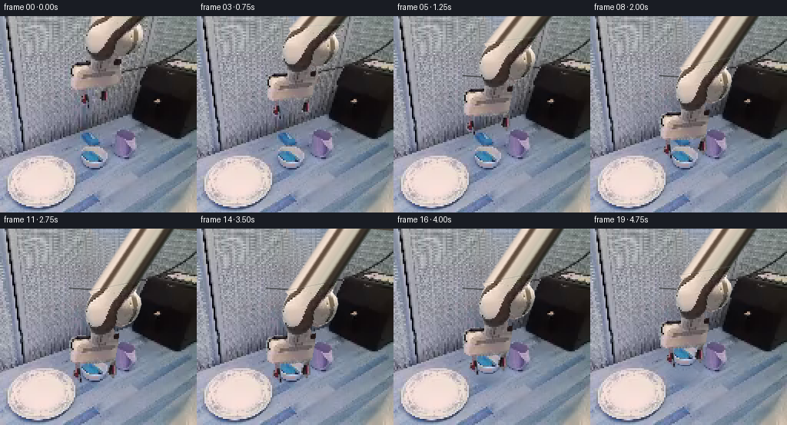
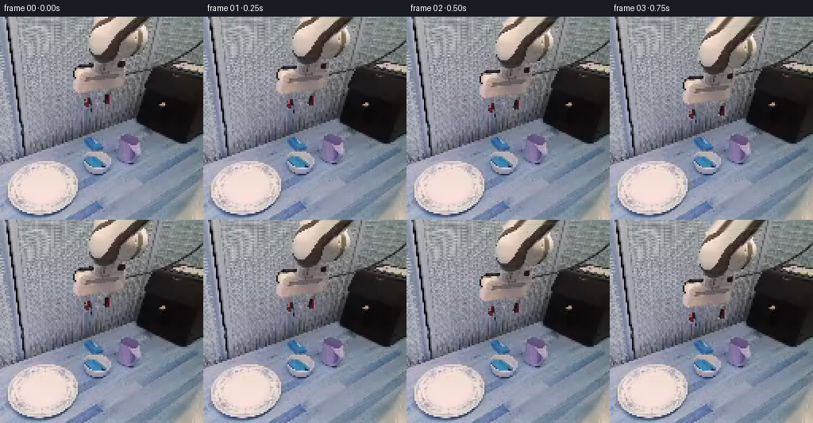
展开代码变化
--- 上一保存版本 +++ 本次保存版本 @@ -77,16 +77,13 @@ rng=np.random.default_rng(5) noise=rng.normal(0,.7,dist.shape) alpha=np.clip((23.5-dist)*255,0,255) -col=np.zeros((*dist.shape,3));col[:]=[65,57,47] -# Cream shell, recessed trim and a softly shaded back surface. -d2=np.sqrt((t-np.clip(t,0,L2))**2+(v-6)**2) -shell=d2<18 -shade=np.clip((v+12)/31,0,1) -cream=np.stack([212+26*shade,199+24*shade,180+24*shade],axis=-1) -col[shell]=cream[shell] -stripe=(v>17)&(v<21)&(t>21)&(t<L2-14) -col[stripe]=[78,65,50] -col+=noise[:,:,None] +# Extrude the source arm's top-edge material cross section out of frame. +# This retains its cream shell, dark trim, lighting, and pixel texture. +source_x=np.clip(155-np.sqrt(2)*v,0,255) +lo=np.floor(source_x).astype(int);hi=np.minimum(lo+1,255) +f=source_x-lo +col=orig[0,lo].astype(float)*(1-f[:,:,None])+orig[0,hi].astype(float)*f[:,:,None] +col+=noise[:,:,None]*.38 # Only previously out-of-view pixels are synthesized; all visible material # comes from the source image and rotates as one rigid part. alpha[coords[:,:,1]>=0]=0
可观测工具轨迹
实际执行的命令与返回图片。
命令 1exit 0
/bin/bash -lc "ls -la && cat prompt.txt && printf '\\n---RULES---\\n' && cat GENERATION_RULES.md"
命令 2exit 0
/bin/bash -lc 'cat task_spec.json && cat artifact_io.py'
命令 3exit 0
/bin/bash -lc "python - <<'PY'
from PIL import Image
im=Image.open('first_frame.png');im.resize((768,768)).save('.tmp/enlarged.png')
PY"命令 4exit 0
/bin/bash -lc "python - <<'PY' import numpy as np A=np.array([313.,10.]); E=np.array([233.,-65.]); W=np.array([128.,39.]); l1=np.linalg.norm(E-A);l2=np.linalg.norm(W-E) for q in [W,[125,72],[122,101],[122,122],[122,130]]: q=np.array(q);v=q-A; d=np.linalg.norm(v);u=v/d;a=(l1*l1-l2*l2+d*d)/(2*d);h=np.sqrt(max(l1*l1-a*a,0)); elbow=A+a*u+h*np.array([u[1],-u[0]]) print(q, elbow, 'angle',np.degrees(np.arctan2(*(elbow-q)[::-1]))) PY"
命令 5exit 0
/bin/bash -lc "python - <<'PY'
from PIL import Image
im=Image.open('first_frame.png')
im.crop((85,0,199,126)).resize((456,504)).save('.tmp/robot.png')
im.crop((99,167,141,203)).resize((420,360)).save('.tmp/bowl.png')
PY"命令 6exit 0
/bin/bash -lc "python - <<'PY'
import numpy as np
W=np.array([135.,34.]); E=np.array([244.,-75.]); A=np.array([332.,-5.]); L=np.linalg.norm(E-A);M=np.linalg.norm(W-E)
for y in [34,60,85,108]:
w=np.array([136.,y]);v=w-A;d=np.linalg.norm(v);u=v/d;a=(L*L-M*M+d*d)/(2*d);h=np.sqrt(max(0,L*L-a*a));e=A+a*u-h*np.array([u[1],-u[0]])
print('w',w,'E',e,'link',np.linalg.norm(e-w),'angle',np.degrees(np.arctan2((e-w)[1],(e-w)[0])))
PY"命令 7exit 0
/bin/bash -lc "python - <<'PY'
from PIL import Image, ImageDraw
im=Image.open('first_frame.png').resize((1024,1024),Image.Resampling.NEAREST);d=ImageDraw.Draw(im)
for x in range(80,201,10):
d.line((4*x,0,4*x,504),fill=(255,80,70),width=1);d.text((4*x+1,480),str(x),fill='red')
for y in range(0,131,10):
d.line((320,4*y,804,4*y),fill=(255,80,70),width=1);d.text((802,4*y),str(y),fill='red')
im.save('.tmp/grid.png')
PY"命令 8exit 0
/bin/bash -lc "python - <<'PY'
from PIL import Image
im=Image.open('first_frame.png');im.crop((89,54,153,123)).resize((512,552),Image.Resampling.NEAREST).save('.tmp/gripper.png')
PY"命令 9exit 0
/bin/bash -lc "python - <<'PY'
from PIL import Image,ImageDraw
im=Image.open('first_frame.png').resize((768,768),Image.Resampling.NEAREST);d=ImageDraw.Draw(im)
for x in range(80,181,10):
d.line((3*x,420,3*x,750),fill='red',width=1);d.text((3*x,720),str(x),fill='red')
for y in range(140,241,10):
d.line((240,3*y,550,3*y),fill='red',width=1);d.text((550,3*y),str(y),fill='red')
im.save('.tmp/gridbowl.png')
PY"命令 10exit 0
/bin/bash -lc "cat > generate.py <<'PY'
from pathlib import Path
import numpy as np
from PIL import Image, ImageDraw, ImageFilter
import artifact_io
ROOT = Path(__file__).resolve().parent
N = 256
im = Image.open(ROOT/'first_frame.png').convert('RGB')
orig = np.asarray(im).copy()
def mask_poly(points, feather=.32):
m=Image.new('L',(N,N));d=ImageDraw.Draw(m);d.polygon(points,fill=255)
return m.filter(ImageFilter.GaussianBlur(feather)) if feather else m
def union(*ms):
return Image.fromarray(np.max(np.stack([np.array(m) for m in ms]),axis=0).astype('uint8'))
arm_mask=union(mask_poly([(136,-3),(193,-3),(178,14),(163,28),(149,46),(137,58),(128,61),(120,56),(114,48),(110,37),(111,25),(115,14),(123,5)]),mask_poly([(143,19),(159,13),(170,11),(176,15),(179,24),(178,34),(173,44),(165,51),(153,53),(141,48)]))
palm_mask=mask_poly([(117,47),(141,46),(147,50),(149,57),(154,56),(153,70),(151,79),(149,90),(145,93),(128,95),(97,95),(91,93),(90,76),(90,66),(94,61),(105,58),(118,60)])
left_mask=mask_poly([(108,94),(114,94),(114,113),(116,115),(116,120),(113,120),(111,115),(107,115),(104,112),(105,105),(108,104)])
right_mask=mask_poly([(133,92),(140,92),(141,110),(138,111),(138,114),(135,114),(134,111),(130,110),(130,101),(133,100)])
robot_mask=union(arm_mask,palm_mask,left_mask,right_mask)
bowl_mask=mask_poly([(111,172),(117,170),(127,170),(134,173),(139,177),(141,182),(140,189),(136,194),(130,198),(117,198),(111,195),(107,190),(104,184),(104,178),(107,175)],.45)
def inpaint(image, mask, kind):
# Harmonic low-frequency completion, supplemented by wall/table texture
# sampled exclusively from intact pixels of the same photograph.
a=np.asarray(image,dtype=np.float64)
m=np.array(mask)/255.
hole=m>.04
Y,X=np.indices((N,N))
if kind=='wall':
sx=43+(X-43)%43
sy=Y
else:
sx=X+39
sy=Y-8
sx=np.clip(sx,0,255);sy=np.clip(sy,0,255)
donor=a[sy,sx]
base=np.asarray(image.filter(ImageFilter.GaussianBlur(3)),dtype=float)
low=base.copy();low[hole]=donor[hole]
for _ in range(700):
av=(np.roll(low,1,0)+np.roll(low,-1,0)+np.roll(low,1,1)+np.roll(low,-1,1))*.25
low[hole]=av[hole]
donor_blur=np.asarray(Image.fromarray(np.uint8(donor)).filter(ImageFilter.GaussianBlur(2)),float)
fill=low+(donor-donor_blur)*.8
blend=np.asarray(mask.filter(ImageFilter.MaxFilter(3)).filter(ImageFilter.GaussianBlur(.6)),float)/255
return Image.fromarray(np.uint8(np.clip(a*(1-blend[...,None])+fill*blend[...,None],0,255)))
bg=inpaint(im,robot_mask,'wall')
# The black cable stays fixed to the rear wall; its hidden continuation is
# reconstructed as a short line through the newly exposed background.
cable=Image.new('RGBA',(N*3,N*3));cd=ImageDraw.Draw(cable)
cd.line([(86*3,77*3),(113*3,79*3),(137*3,78*3),(154*3,75*3),(165*3,73*3)], fill=(38,42,40,185),width=5)
cable=cable.resize((N,N),Image.Resampling.LANCZOS)
ca=np.array(cable);ca[:,:,3]=(ca[:,:,3].astype(float)*np.asarray(robot_mask)/255).astype('uint8')
bg=Image.alpha_composite(bg.convert('RGBA'),Image.fromarray(ca)).convert('RGB')
bg_lift=inpaint(bg,bowl_mask,'table')
# Build rigid cutout layers. No per-frame morphing is used.
def cut(mask):
layer=im.convert('RGBA');layer.putalpha(mask);return layer
palm=cut(palm_mask);left=cut(left_mask);right=cut(right_mask);bowl=cut(bowl_mask)
def translate(layer,dx,dy):
return layer.transform((N,N),Image.Transform.AFFINE,(1,0,-dx,0,1,-dy),Image.Resampling.BICUBIC)
W0=np.array([135.,33.]);E0=np.array([244.,-76.]);A=np.array([332.,-6.])
L1=np.linalg.norm(E0-A);L2=np.linalg.norm(W0-E0)
O=np.array([-100.,-210.]);S=(450,480)
yy,xx=np.indices((S[1],S[0]));coords=np.stack([xx+O[0],yy+O[1]],-1)
u=(E0-W0)/L2;norm=np.array([u[1],-u[0]])
# norm faces down/left in image coordinates.
t=(coords-W0)@u;v=(coords-W0)@norm
near=np.clip(t,0,L2)
dist=np.sqrt((t-near)**2+v*v)
rng=np.random.default_rng(5)
noise=rng.normal(0,.7,dist.shape)
alpha=np.clip((23.5-dist)*255,0,255)
col=np.zeros((*dist.shape,3));col[:]=[65,57,47]
# Cream shell, recessed trim and a softly shaded back surface.
d2=np.sqrt((t-np.clip(t,0,L2))**2+(v-6)**2)
shell=d2<18
shade=np.clip((v+12)/31,0,1)
cream=np.stack([196+36*shade,184+33*shade,165+33*shade],axis=-1)
col[shell]=cream[shell]
stripe=(v>17)&(v<21)&(t>21)&(t<L2-14)
col[stripe]=[78,65,50]
col+=noise[:,:,None]
# Only previously out-of-view pixels are synthesized; all visible material
# comes from the source image and rotates as one rigid part.
alpha[coords[:,:,1]>=0]=0
extended=Image.fromarray(np.dstack([np.uint8(np.clip(col,0,255)),np.uint8(alpha)]),'RGBA')
extended.alpha_composite(cut(arm_mask),dest=(100,210))
def ik(w):
vec=w-A;d=np.linalg.norm(vec);direction=vec/d
aa=(L1*L1-L2*L2+d*d)/(2*d)
hh=np.sqrt(max(0,L1*L1-aa*aa))
return A+aa*direction-hh*np.array([direction[1],-direction[0]])
def forearm(w):
e=ik(w);a0=np.arctan2(u[1],u[0]);a=np.arctan2((e-w)[1],(e-w)[0])-a0
c,s=np.cos(a),np.sin(a)
R=np.array([[c,-s],[s,c]])
inv=R.T
b=W0-inv@w-O
coeff=(inv[0,0],inv[0,1],b[0],inv[1,0],inv[1,1],b[1])
return extended.transform((N,N),Image.Transform.AFFINE,coeff,Image.Resampling.BICUBIC),e
def upper_link(e):
# Rigid proximal link remains mostly outside the fixed camera.
scale=3;la=Image.new('RGBA',(N*scale,N*scale));d=ImageDraw.Draw(la)
def capsule(p,q,width,color):
p=tuple(p*scale);q=tuple(q*scale);r=width*scale/2
d.line([p,q],fill=color,width=int(width*scale))
for z in [p,q]:d.ellipse((z[0]-r,z[1]-r,z[0]+r,z[1]+r),fill=color)
capsule(e,A,39,(78,72,62,255));capsule(e+np.array([0.,-4]),A+np.array([0.,-4]),31,(198,189,171,255))
r=21*scale;cx,cy=e*scale
d.ellipse((cx-r,cy-r,cx+r,cy+r),fill=(205,197,178,255))
r=12*scale;d.ellipse((cx-r,cy-r,cx+r,cy+r),fill=(134,130,119,255))
return la.resize((N,N),Image.Resampling.LANCZOS)
def smooth(t):
t=np.clip(t,0,1);return t*t*(3-2*t)
frames=[orig]
for i in range(1,20):
reach=smooth(i/11)
jaw=10*smooth(i/5)-4*smooth((i-11)/3)
lift=20*smooth((i-14)/4)
# End effector orientation remains constant while the elbow articulates.
offset=np.array([0.,80*reach-lift]);w=W0+offset
if lift>0:
frame=bg_lift.convert('RGBA')
# Original soft tabletop shadow stays on the support surface.
sh=Image.new('RGBA',(N,N));ds=ImageDraw.Draw(sh)
ds.ellipse((109,193,138,200),fill=(25,42,56,int(40*(1-lift/30))))
sh=sh.filter(ImageFilter.GaussianBlur(2))
frame=Image.alpha_composite(frame,sh)
frame=Image.alpha_composite(frame,translate(bowl,0,-lift))
else:frame=bg.convert('RGBA')
# Mild, diffuse moving tool shadow cast on the bench.
sh=Image.new('RGBA',(N,N));ds=ImageDraw.Draw(sh)
strength=17*reach
ds.ellipse((103,189,157,207),fill=(18,35,50,int(strength)))
sh=sh.filter(ImageFilter.GaussianBlur(7))
# Keep objects' appearance intact: shadow only falls on the work surface.
sa=np.array(sh);sa[:,:,3]=np.uint8(sa[:,:,3]*(1-np.array(bowl_mask)/255))
frame=Image.alpha_composite(frame,Image.fromarray(sa))
fa,e=forearm(w)
frame=Image.alpha_composite(frame,upper_link(e))
frame=Image.alpha_composite(frame,fa)
frame=Image.alpha_composite(frame,translate(palm,*offset))
frame=Image.alpha_composite(frame,translate(left,offset[0]-jaw,offset[1]))
frame=Image.alpha_composite(frame,translate(right,offset[0]+jaw,offset[1]))
frames.append(np.asarray(frame.convert('RGB')))
frames=np.stack(frames).astype(np.uint8)
artifact_io.save(frames,ROOT)
bg.save(ROOT/'.tmp/background.png')
assert np.array_equal(frames[0],orig)
PY
python generate.py"命令 11exit 0
/bin/bash -lc "python - <<'PY'
from PIL import Image
Image.open('frames/19.png').resize((768,768)).save('.tmp/finalbig.png')
PY"命令 12exit 0
/bin/bash -lc "python - <<'PY'
exec(open('generate.py').read().split('frames=[orig]')[0])
bg_lift.resize((768,768)).save('.tmp/liftbg.png')
PY"命令 13exit 0
/bin/bash -lc "python - <<'PY'
import numpy as np
from PIL import Image
im=np.array(Image.open('first_frame.png')).astype(int)
for y in [0,5,10,15,20,25,30,35,40,45,50,55,60,65,70,80,90,95]:
m=(im[y,:,0]-im[y,:,1]>7)&(im[y,:,0]-im[y,:,2]>14);a=np.flatnonzero(m[85:196])+85
print(y,a.tolist())
PY"命令 14exit 0
/bin/bash -lc "python - <<'PY'
from PIL import Image
print(Image.open('first_frame.png').size)
im=Image.open('first_frame.png'); print(im.getpixel((120,0)),im.getpixel((135,0)))
im.resize((1024,1024),Image.Resampling.NEAREST).save('.tmp/sourcebig.png')
PY"命令 15exit 0
/bin/bash -lc "python - <<'PY'
p='generate.py'
s=open(p).read().replace('[(136,-3),(193,-3)','[(120,-3),(193,-3)').replace('[(143,19),(159,13),(170,11),(176,15),(179,24),(178,34),(173,44),(165,51),(153,53),(141,48)]','[(144,20),(159,13),(173,9),(180,13),(184,22),(184,30),(179,40),(173,47),(165,51),(153,54),(141,48)]')
s=s.replace(\"sx=X+39\\n sy=Y-8\", \"sx=X+38\\n sy=Y+23\")
s=s.replace(\"bg=inpaint(im,robot_mask,'wall')\", \"bg=inpaint(im,robot_mask.filter(ImageFilter.MaxFilter(5)),'wall')\")
s=s.replace(\"bg_lift=inpaint(bg,bowl_mask,'table')\", \"bg_lift=inpaint(bg,bowl_mask.filter(ImageFilter.MaxFilter(9)),'table')\")
s=s.replace('W0=np.array([135.,33.]);E0=np.array([244.,-76.]);A=np.array([332.,-6.])','W0=np.array([127.,28.]);E0=np.array([236.,-81.]);A=np.array([324.,-11.])')
s=s.replace('196+36*shade,184+33*shade,165+33*shade','212+26*shade,199+24*shade,180+24*shade')
s=s.replace(\"extended=Image.fromarray(np.dstack([np.uint8(np.clip(col,0,255)),np.uint8(alpha)]),'RGBA')\", \"extended=Image.fromarray(np.dstack([np.uint8(np.clip(col,0,255)),np.uint8(alpha)]))\\nextended=extended.resize((225,240),Image.Resampling.BOX).resize(S,Image.Resampling.BILINEAR)\")
open(p,'w').write(s)
PY
python generate.py"命令 16exit 0
/bin/bash -lc "python - <<'PY'
p='generate.py';s=open(p).read();start=s.index('col=np.zeros');end=s.index('# Only previously')
s=s[:start]+'''# Extrude the source arm's top-edge material cross section out of frame.
# This retains its cream shell, dark trim, lighting, and pixel texture.
source_x=np.clip(155-np.sqrt(2)*v,0,255)
lo=np.floor(source_x).astype(int);hi=np.minimum(lo+1,255)
f=source_x-lo
col=orig[0,lo].astype(float)*(1-f[:,:,None])+orig[0,hi].astype(float)*f[:,:,None]
col+=noise[:,:,None]*.38
'''+s[end:]
open(p,'w').write(s)
PY
python generate.py
python - <<'PY'
from PIL import Image
Image.open('frames/19.png').resize((768,768)).save('.tmp/finalbig.png')
PY"命令 17exit 0
/bin/bash -lc "python - <<'PY'
exec(open('generate.py').read().split('frames=[orig]')[0])
extended.crop((204,175,298,230)).resize((752,440),Image.Resampling.NEAREST).save('.tmp/seam.png')
PY"命令 18exit 0
/bin/bash -lc "python - <<'PY'
import numpy as np
from PIL import Image
A=np.array(Image.open('first_frame.png')).astype(float)
for y in [0,1,2,3,4,5,6,7,8,9,10]:
print(y,[tuple(A[y,x].astype(int)) for x in [127,139,145,151,156,168]])
PY"命令 19exit 0
/bin/bash -lc "python - <<'PY'
import numpy as np
from PIL import Image
from pathlib import Path
fs=sorted(Path('frames').glob('*.png'))
a=np.stack([np.array(Image.open(p)) for p in fs])
assert a.shape==(20,256,256,3) and a.dtype==np.uint8
assert np.array_equal(a[0],np.array(Image.open('first_frame.png').convert('RGB')))
print('Validated:',a.shape,a.dtype,'frame 00 pixel-identical')
PY
command -v ffmpeg || true"视觉工具实际返回图片 1
视觉工具实际返回图片 2
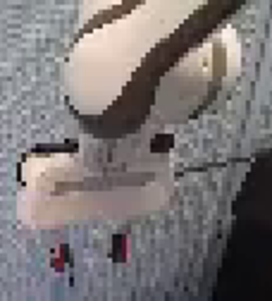
视觉工具实际返回图片 3
视觉工具实际返回图片 4
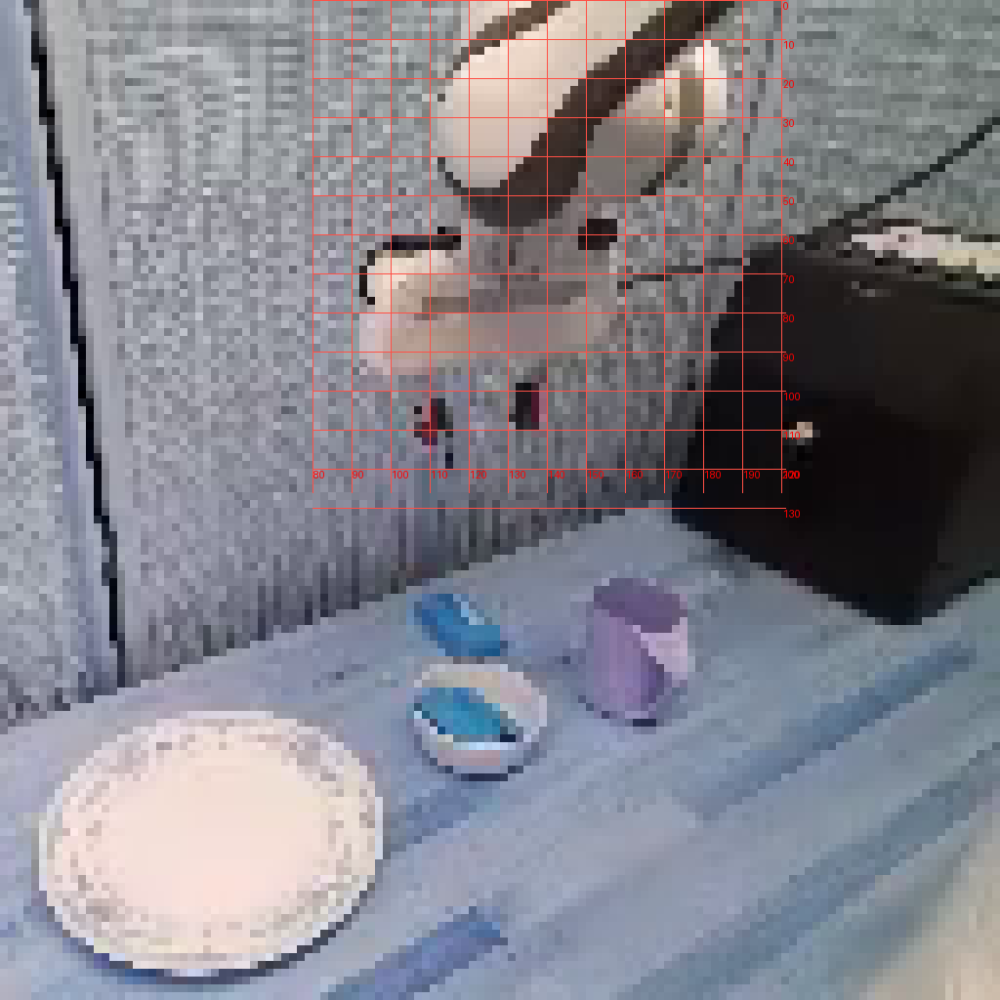
视觉工具实际返回图片 5
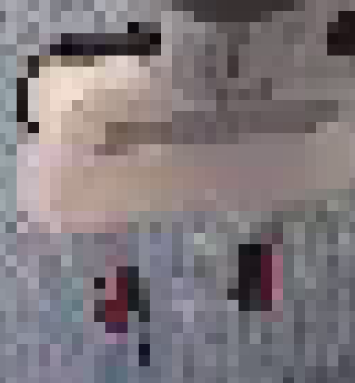
视觉工具实际返回图片 6
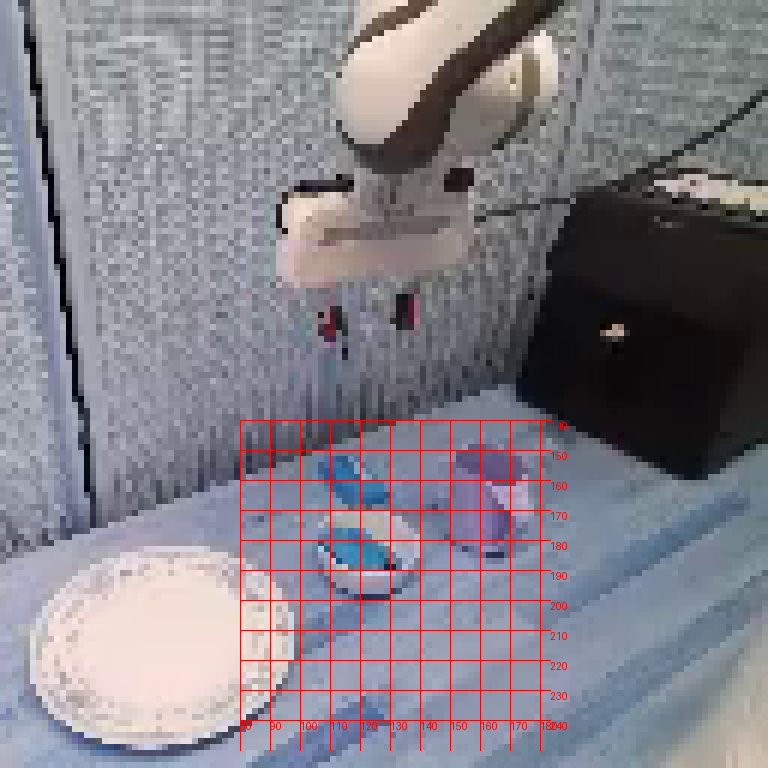
视觉工具实际返回图片 7

视觉工具实际返回图片 8
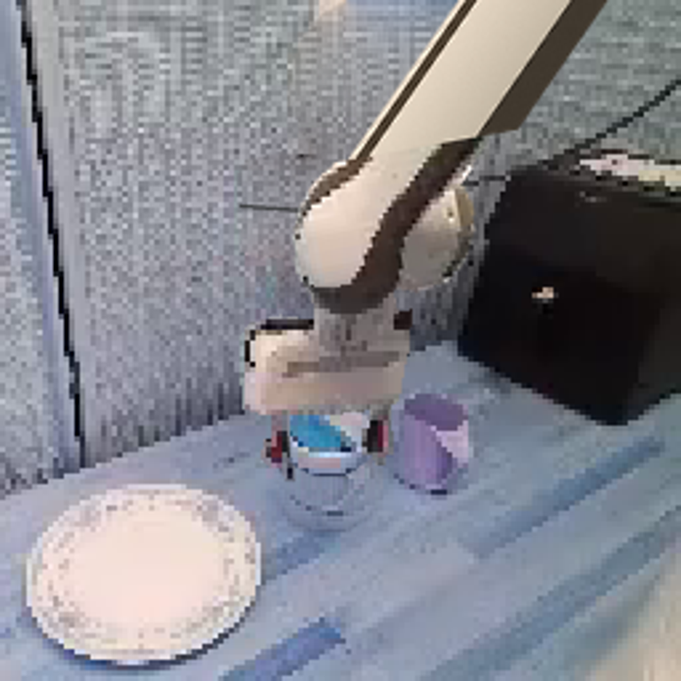
视觉工具实际返回图片 9
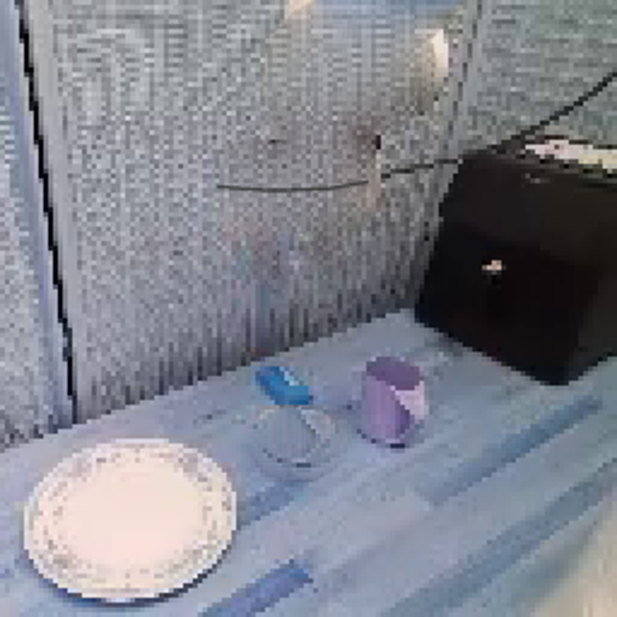
视觉工具实际返回图片 10
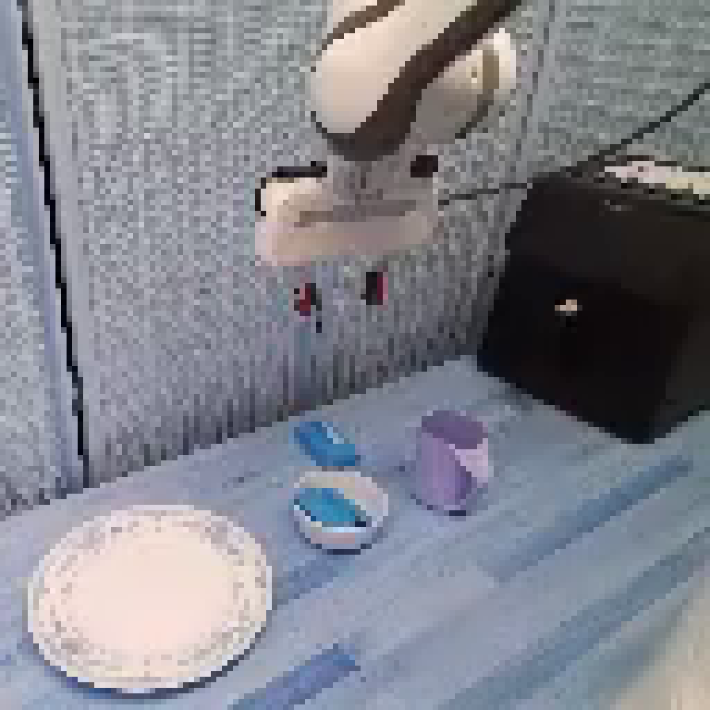
视觉工具实际返回图片 11

视觉工具实际返回图片 12
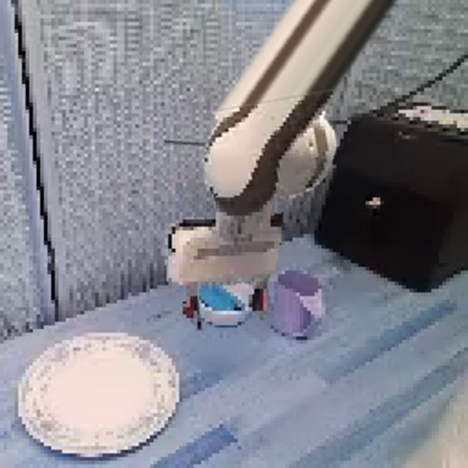
视觉工具实际返回图片 13
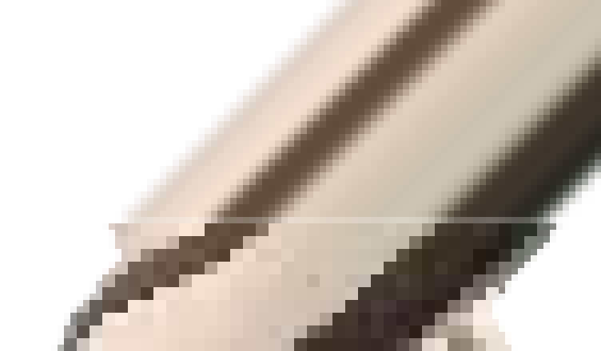
保存候选 3 份；完成命令 19 次；可验证图片返回 13 张。原始 API 响应与完整日志保留在本地。